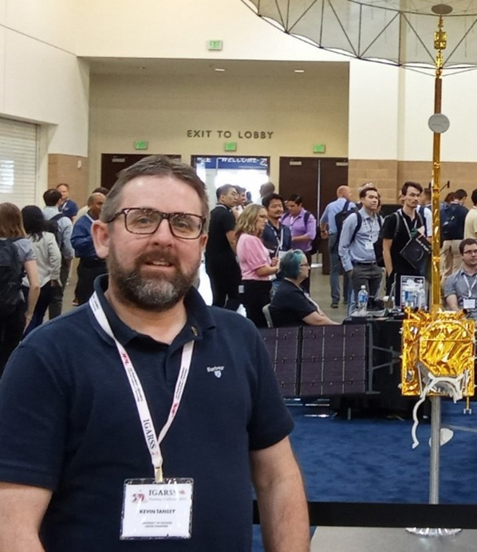
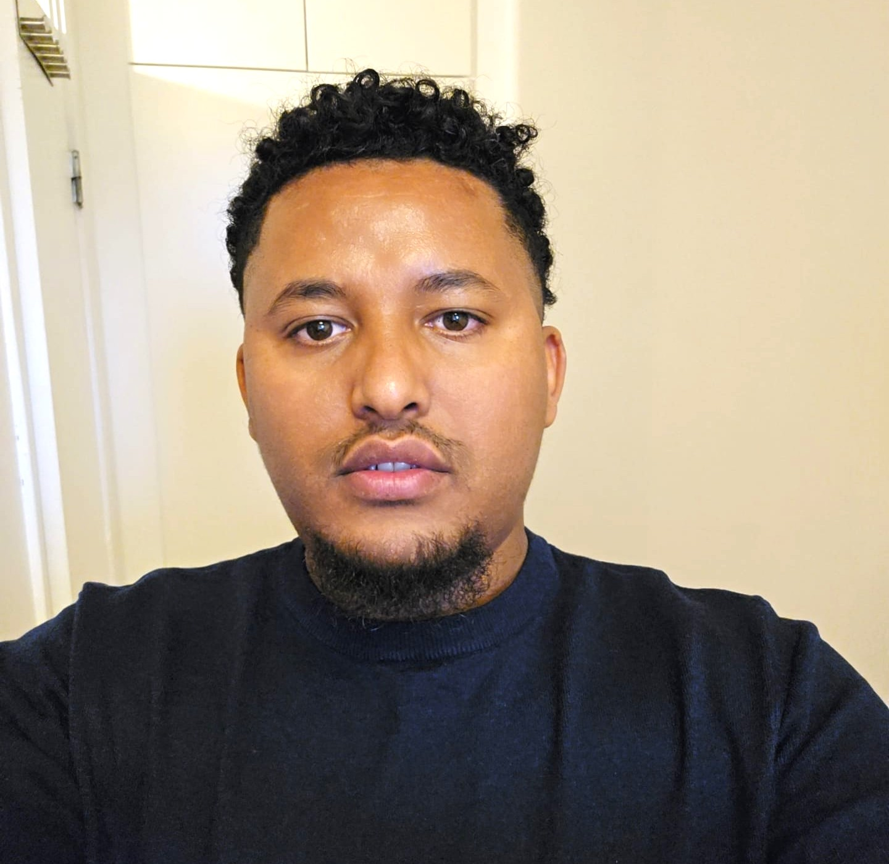

Workshop on Mining Imaging Data
for Hydrological and Environmental Modelling
Bridging Earth Observation, Computer Vision & Environmental Modelling
Workshop happening countdown
About the Workshop
What is HydroImaging?
A focused full-day workshop at the crossroads of image processing, remote sensing, and environmental science.
Earth Observation is a rapidly growing research field that combines computer vision, machine learning, and signal/image processing to address some of the most pressing challenges related to climate change, the water cycle, and environmental attribute prediction - including water quality, snow depth, vegetation cover, and pollution.
HydroImaging brings together experts in machine vision, satellite observation, machine learning, remote sensing, hydrology, and land-surface modelling. The workshop fosters collaboration between the Computer Vision, Remote Sensing, and Environmental Monitoring communities, and builds bridges between IEEE technical societies including GRSS, SPS, SSIT, and CIS.
With the rapid advances in multi-modal sensing, large-scale datasets such as Copernicus, and the growing ecosystem of pretrained foundation models, the workshop aims to catalyse new collaborations enabling scalable, observation-driven prediction for operational environmental use.
 Flood Mapping
Flood Mapping
 Glacier Monitoring
Glacier Monitoring
 Vegetation Analysis
Vegetation Analysis
Invited Speakers
Keynote & Invited Talks

"From Fields to Fires to Fens: Integrating Deep Learning and Multi-Sensor Earth Observation for Global Environmental Resilience"
Program
Workshop Program
Full-day workshop agenda with icon-based highlights, paper details, and session flow for easy scanning.
September 17, 2026 · 09:00–16:30 Eastern European Summer Time (EEST) · UTC+3 C8 (Tampere University) · ICIP 2026 Venue 14 Papers · 1 Keynote · 1 Introduction · 1 Panel
Introduction
Workshop Introduction
Keynote
From Fields to Fires to Fens: Integrating Deep Learning and Multi-Sensor Earth Observation for Global Environmental Resilience
Break
Coffee Break
Oral Session
Paper Session 1
Paper 3956
Monitoring Algae Blooms in Lough Neagh, United Kingdom using SENTINEL-1 statistical modelling and Sentinel-2 multimodal fusion
Paper 4140
A Large Scale Open-Source Image and Video Dataset for Robust Wildfire Detection and Classification
Paper 4386
Multimodal Change Detection for Remote Sensing
Paper 4152
Constructing an environmentally complex trail camera capture stream and river water segmentation dataset using the EcoSeg hybrid foundation-human annotation tool
Paper 4233
MACHINE-ORIENTED RGB-D REPRESENTATION FOR QUADRUPED LIVESTOCK BODY FEATURE EXTRACTION
Paper 4122
DEEP LEARNING-BASED SEA ICE THICKNESS ESTIMATION FROM MULTIMODAL SATELLITE AND THERMODYNAMIC DATA IN BALTIC SEA
Break
Lunch Break
Oral Session
Paper Session 2
Paper 4258
HYDRO-DATASET: A MULTI-MODAL OPEN-SOURCE PIPELINE FOR NORDIC HYDROLOGICAL RESEARCH AND FOUNDATION MODEL BENCHMARKING
Paper 4047
AI Driven Identification of Stormwater Quality Regimes Using Event Based Monitoring and High Resolution Sensor Data
Paper 4053
Authenticity Verification of Climate-Change Disaster Damage Claims Using Satellite Images
Paper 4349
Multisensor Data Fusion for Sea Ice Concentration. A comparative Study of U-Net Depths
Paper 4362
Spatiotemporal Raster Analysis of CIMP6 Freeze-Thaw Dynamics in Cold Climate Region
Paper 4355
Weighted Prompts Ensemble for Fine-Grained Zero-Short Surface-Water Feature Classification in Aerial Images with RemoteCLIP
Paper 4358
Beyond Weak Labels: Prompt-Guided Local Refinement for Weakly Supervised Water Segmentation in High-Resolution Multispectral Imagery
Paper 4324
Explainable Peatland Water Table Modeling Using Large Language Models
Closure
Panel Discussion and Closure
Call for Papers
Submit Your Research
We welcome contributions on methods, applications, and open-data initiatives at the frontier of imaging and environmental science.
Topics of Interest
Methods & Models
- Data-centric machine learning for remote sensing data
- Language and vision models (LLMs, CLIP, Visual Language Models)
- Data assimilation for image/temporal resolution discrepancy
- Multi-modal fusion for parameter estimation and prediction
- Generative models (GANs, diffusion) for remote sensing
- Explainability and interpretability of environmental AI
- Super-resolution and image reconstruction
Applications
- Disaster relief and flood detection & mapping
- Snow and water prediction
- Coast, sea, and marine monitoring
- Pollution and air/water quality analysis
- Sustainable and intelligent agriculture
- Climate change and geoscience applications
- Urban planning and phenological studies
Open Data & Benchmarks
- New open datasets for remote sensing and hydrology
- Annotated imaging datasets for environmental analysis
- Reproducible pipelines and evaluation benchmarks
Submission Guidelines
Select the Satellite Workshop Papers track, then choose Satellite Workshop Papers from the workshop list.
Contact UsImportant Dates
Key Deadlines
All deadlines are at 23:59 AoE (Anywhere on Earth).
Paper Submission
Reviews Due
Rebuttal Period
Acceptance Notification
Final Manuscript
Author Registration
HydroImaging Workshop
Full-day workshop program
Organization
Workshop Organizers
An international team with expertise spanning computer vision, machine learning, remote sensing, and environmental science.




Supported By
Sponsors & Partners
HydroImaging workshops are proudly supported by leading research initiatives working at the intersection of technology, water, and climate.
 Digital Water Flagship
Keynote Sponsor
Digital Water Flagship
Keynote Sponsor
 Climate AI Nordics
Partner
Climate AI Nordics
Partner